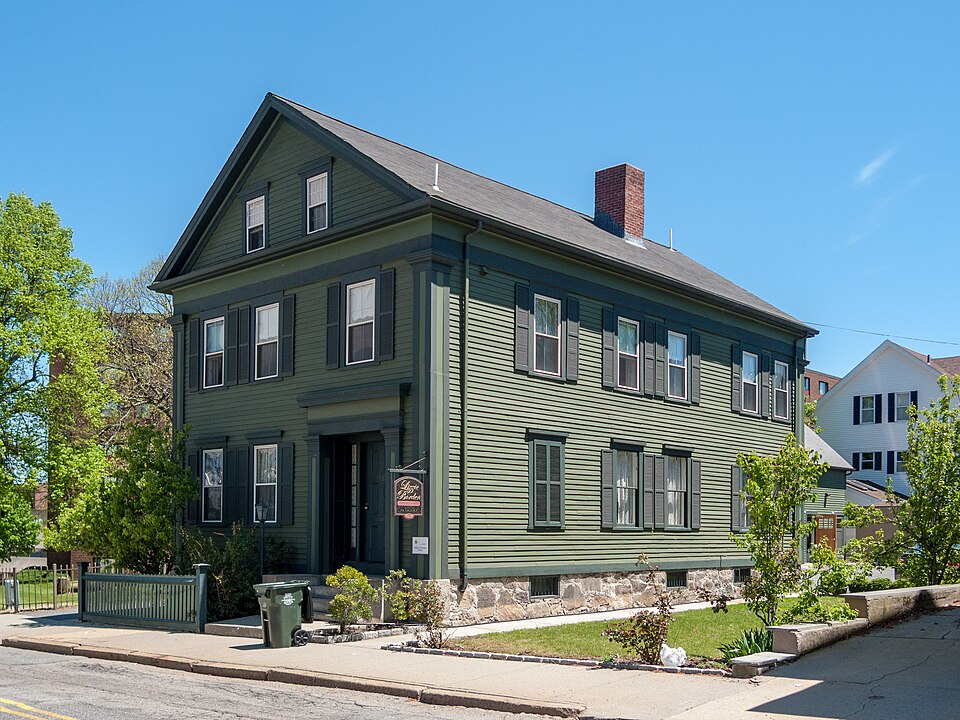

The History of Lizzie Borden's House
Located in Fall River, Massachusetts, the Lizzie Borden House is one of America's most infamous historic residences. Built in 1845, this seemingly ordinary home became the center of a national mystery on August 4, 1892, when Andrew Borden and his wife, Abby, were brutally murdered. Andrew's daughter, Lizzie Borden, was accused of the killings but later acquitted. More than a century later, the case remains unsolved, and the house has become a popular destination for visitors fascinated by true crime, Victorian history, and unexplained mysteries.

Origins and Architecture
Constructed in 1845, the Lizzie Borden House is a modest wood-frame residence featuring Greek Revival architectural influences. Its straightforward design includes clapboard siding, shuttered windows, a prominent front-facing gable, and a relatively simple interior arrangement. Originally built as a two-family dwelling, the house was purchased by Andrew Borden in 1872 and converted into a single-family residence. Despite his considerable wealth, Andrew preferred a relatively modest lifestyle, and the home lacked some conveniences available to more affluent Victorian households. Today, its preserved rooms offer a glimpse into nineteenth-century domestic life.
People and Changing History
The home's most famous residents were Andrew Jackson Borden, his second wife Abby, and his daughters, Emma and Lizzie. The household also employed an Irish-born domestic servant named Bridget Sullivan. Tensions involving family relationships and finances have frequently been discussed in connection with the murders, although their significance remains debated. Following Lizzie's acquittal, she and Emma moved to a larger Fall River residence known as Maplecroft. Over the following century, the Second Street house passed through different owners before becoming a historic museum and bed-and-breakfast, preserving its connection to one of America's most enduring criminal mysteries.
Notable Events
On the morning of August 4, 1892, Abby Borden was killed in an upstairs guest bedroom, while Andrew Borden was later discovered murdered on a downstairs sitting-room couch. The shocking deaths sparked an investigation that quickly focused on Lizzie Borden. She was arrested on August 11, 1892, and her highly publicized trial began in New Bedford, Massachusetts, on June 5, 1893. On June 20, an all-male jury found Lizzie not guilty. No one else was convicted of the murders. Lizzie died in 1927, but the case continued to attract public attention through books, films, historical investigations, and popular culture.
Legends and Mysteries
The Lizzie Borden House has inspired countless theories, ghost stories, and dramatic retellings. One of its most famous legends is a children's rhyme accusing Lizzie of killing her parents with an axe, although the rhyme exaggerates the violence and ignores her acquittal. Visitors have also reported unexplained footsteps, strange sounds, moving objects, and apparitions inside the historic residence. These stories have contributed to the property's reputation as a haunted destination, and paranormal tours remain part of its modern identity. However, supernatural claims have not been scientifically established, and the identity of the actual murderer remains unknown.
Evidence and Unanswered Questions
The Borden murders generated extensive historical documentation, including witness statements, courtroom testimony, newspaper reports, and investigative records. Prosecutors relied heavily on circumstantial evidence, including conflicting accounts of Lizzie's movements and testimony concerning a dress she burned after the killings. However, investigators did not establish a conclusive connection between Lizzie and the murder weapon, and the jury ultimately acquitted her. Historians and true-crime researchers continue to examine the evidence, but no explanation has achieved universal acceptance. The mystery survives because the available records leave important questions unanswered.
Sources and References
The historical information presented on this page was compiled from the Lizzie Borden House's official website, the National Women's History Museum, historical court records, and research collections dedicated to the Borden case. These materials document the home's architecture, the events of August 4, 1892, Lizzie Borden's trial, and the preservation of the property. Popular legends and reported paranormal experiences are distinguished from established historical evidence.
References
HISTORY — Lizzie Borden Acquitted https://www.history.com/this-day-in-history/june-20/lizzie-borden-acquitted
Lizzie Andrew Borden Virtual Museum & Library — Chronologies https://lizzieandrewborden.com/chronologies/
Lizzie Andrew Borden Virtual Museum & Library — Primary Sources https://lizzieandrewborden.com/primary-sources/
Lizzie Borden House — Historical and Ghost Tours https://lizzie-borden.com/tours/
Lizzie Borden House — Official Website https://lizzie-borden.com/
National Women's History Museum — The Lizzie Borden Trial of 1892 https://www.womenshistory.org/articles/lizzie-borden-trial-1892